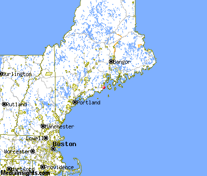
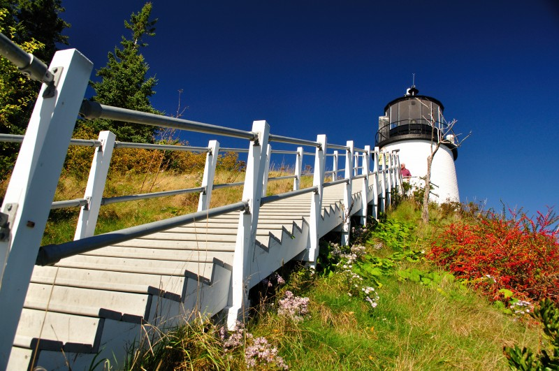
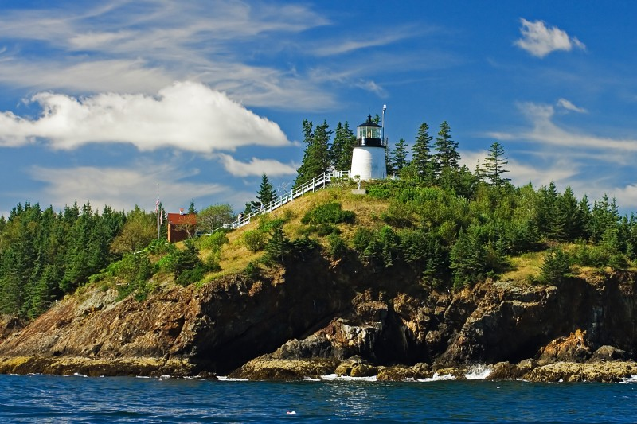
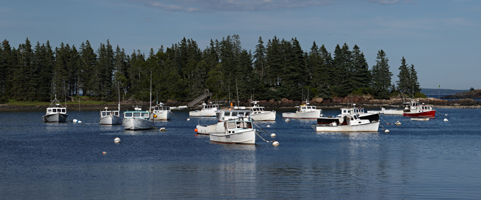

Owls Head, Maine
   
This is where I grew up and have lived my entire life. I still live at the house, that I've been in since I was born, with my mother, father, sister and our golden retreiever, Teddy. We live right across the street from the ocean. Owls Head is known highly for its lighthouse that was built in 1825. It overviews the Rockland Harbor. Also this small town is well known for the Owls Head Transportation Museum. If you were to visit this beautiful town, one place you will want to stop at is the Owl's Head General Store. This store is the home of the 'Seven Napkin Burger'. This burger was voted best in Maine on Food Network and trust me, it is the best of the best.